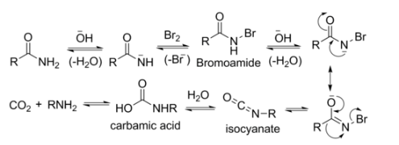

Apex Chemistry
Hofmann rearrangement (Hofmann degradation)
Definition
The Hofmann rearrangement is a chemical reaction in which a primary amide is converted into a primary amine with one less carbon atom using bromine (Br2) and a strong base such as NaOH.
General Reaction
R-CONH2 + Br2 + 4NaOH → R-NH2 + Na2CO3 + 2NaBr + 2H2O
Example
CH3CONH2 → CH3NH2
Mechanism
- Base abstracts an acidic N–H proton, yielding an anion.
- The anion reacts with bromine in an α-substitution reaction to give an N-bromoamide.
- Base abstraction of the remaining amide proton gives a bromoamide anion.
- The bromoamide anion rearranges as the R group attached to the carbonyl carbon migrates to nitrogen at the same time the bromide ion leaves, giving an isocyanate.
- The isocyanate adds water in a nucleophilic addition step to yield a carbamic acid (urethane).
- The carbamic acid spontaneously loses CO₂, yielding the amine product.

Applications
- Preparation of primary amines.
- Useful in degradation of amides.
- Used in pharmaceutical synthesis.
- Chain shortening reaction in organic chemistry.
MCQ Quiz